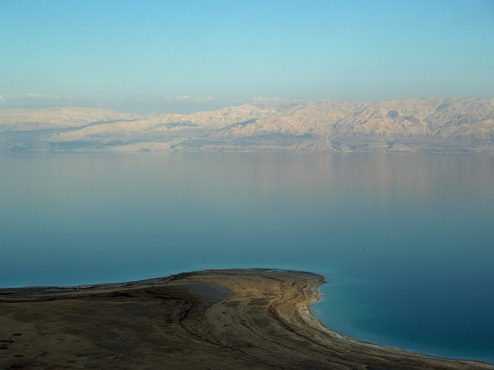
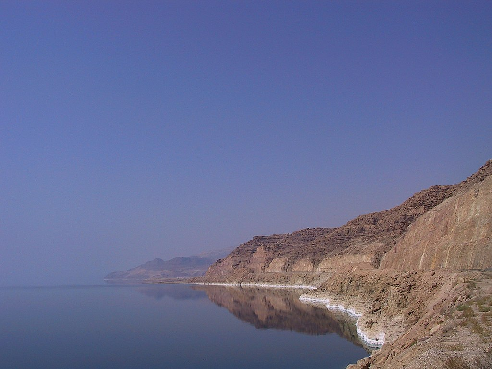
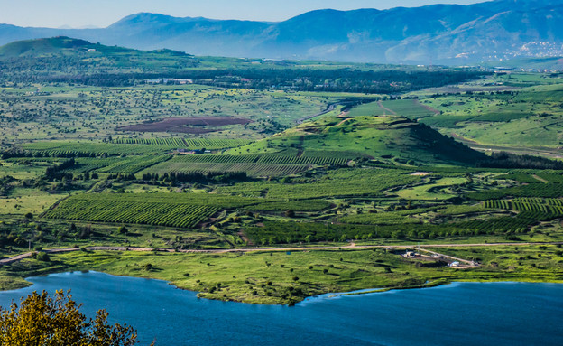
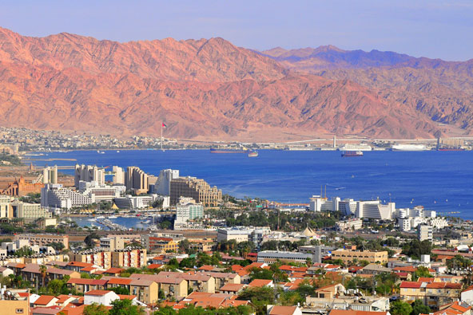

Itzik Amsalem
The Best Places To Travel In Our Spectacular Country
   
Dead Sea and Masada
The Dead Sea is an endorheic lake located in the Jordan Rift Valley. The Jordan River is the only major water source flowing into the Dead Sea, although there are small perennial springs under and around the Dead Sea, forming pools and quicksand pits along the edges.
Masada is an ancient fortification in the Southern District of Israel. Masada is one of Israel's most popular tourist attractions.
Click here for more informationThe Golan Heights
The Golan Heights or simply the Golan Is The highest place in israel.
Click here for more informationThe Western Wall
Jerusalem, the Western Wall, the holiest place in Israel
Click here for more informationEilat
Eilat, the southernmost city in Israel, the city of tourism and entertainment, which brings about three million tourists a year.(excluding Corona)
Click here for more information